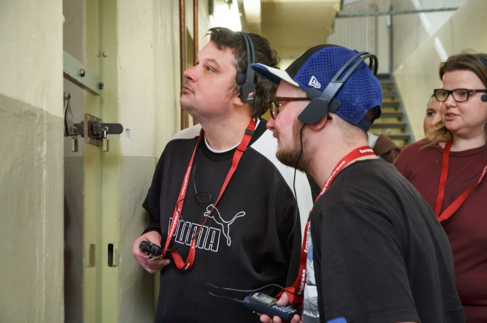

Bildungsarbeit
Wie wir Geschichte vermitteln
Die Bildungsarbeit der Gedenkstätte Lindenstraße orientiert sich an den Erfahrungen und Biografien der Menschen, die an diesem Ort verfolgt, inhaftiert oder von politischen Umbrüchen betroffen waren. Unsere Angebote fördern die aktive Auseinandersetzung mit Geschichte, Gegenwart und gesellschaftlicher Verantwortung.
Die Stiftung Gedenkstätte Lindenstraße bietet ein vielfältiges Bildungs- und Vermittlungsprogramm für Interessierte aller Altersgruppen an. Ein zentraler Ansatzpunkt der Bildungsarbeit sind die Biografien der Menschen, die aus politischen oder rassistischen Gründen im Nationalsozialismus verfolgt oder in der Sowjetischen Besatzungszeit und in der DDR in der Lindenstraße inhaftiert waren. Dieser biografische Ansatz ermöglicht einen niedrigschwelligen, empathischen Zugang und findet sich in allen Vermittlungsformaten wieder.
Das Spektrum an Formaten reicht von Führungen, Zeitzeug:innengesprächen, Workshops bis hin zu digitalen Spurensuchen. Besucher:innenorientierung ist eine wichtige Prämisse unserer Bildungsarbeit.
Alle Workshops sind modular angelegt und je nach Interessen und Vorkenntnissen flexibel kombinierbar. Gern beraten wir Sie und stellen Ihnen ein individuelles Programm für Ihren Besuch zusammen!

Entdecken, Forschen und Diskutieren
Die Formate sind handlungsorientiert: Die Besucher:innen lernen entdeckend, forschend und diskutierend den historischen Ort kennen. Methodische Vielfalt und kreative Präsentationsformen wecken das Interesse für die historischen Themen. Aktivierende Methoden stärken die Kompetenzentwicklung.
Multiperspektivisch und kontrovers
Die Besucher:innen werden durch multiperspektivische und kontroverse Darstellungen zur kritischen Auseinandersetzung mit der Geschichte angeregt.
Gegenwartsbezug und Menschenrechtsbildung
Die Lebenswelt der Besucher:innen findet ebenso Berücksichtigung wie der Bezug zu aktuellen Themen und Fragestellungen. Dieser Gegenwarts- und Lebensweltbezug unterstützt die kritische Reflexion und verdeutlicht den Besucher:innen die Relevanz der Inhalte für die heutige Zeit und für sie selbst. Hierbei wird u. a. auf den Ansatz der Menschenrechtsbildung zurückgegriffen.